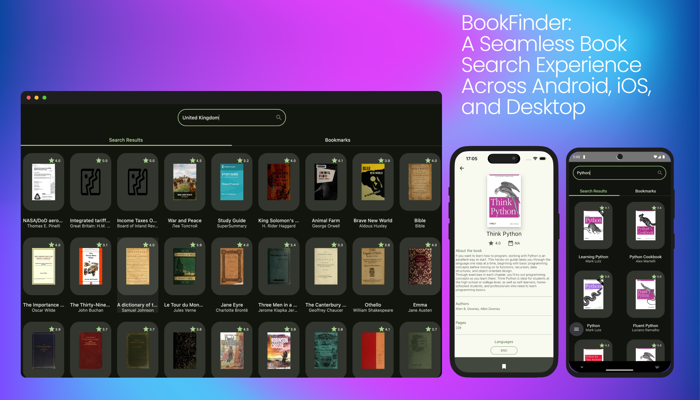
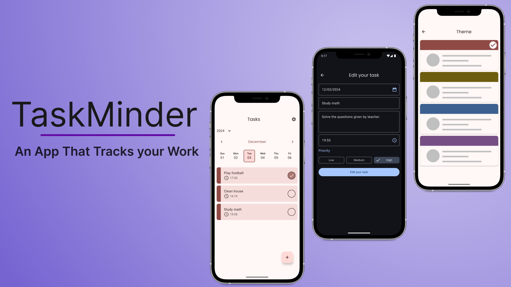
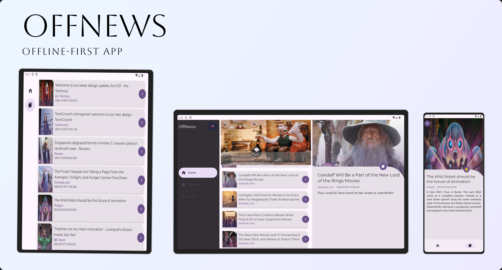
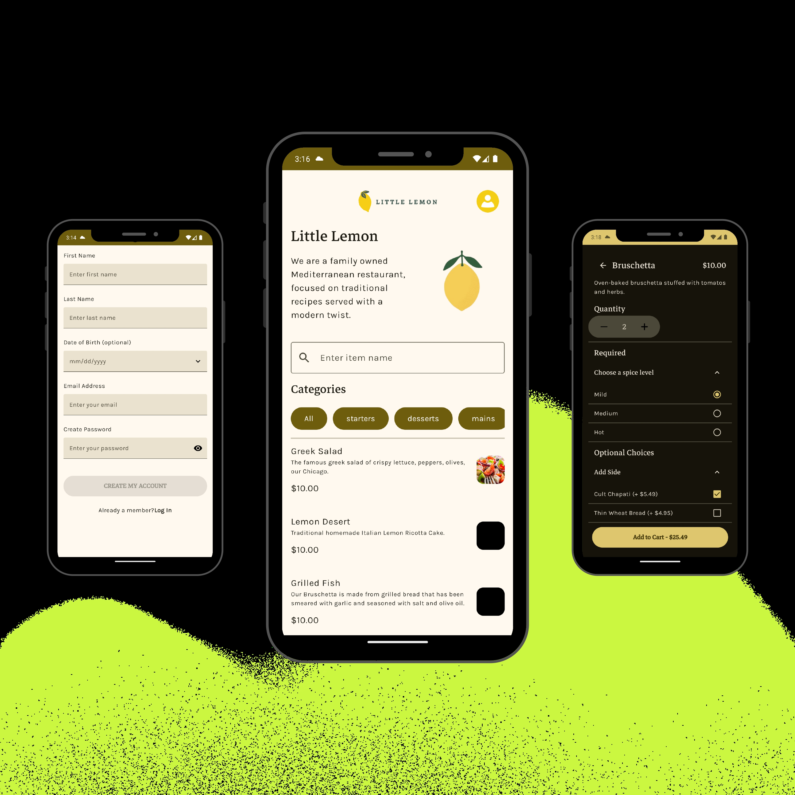
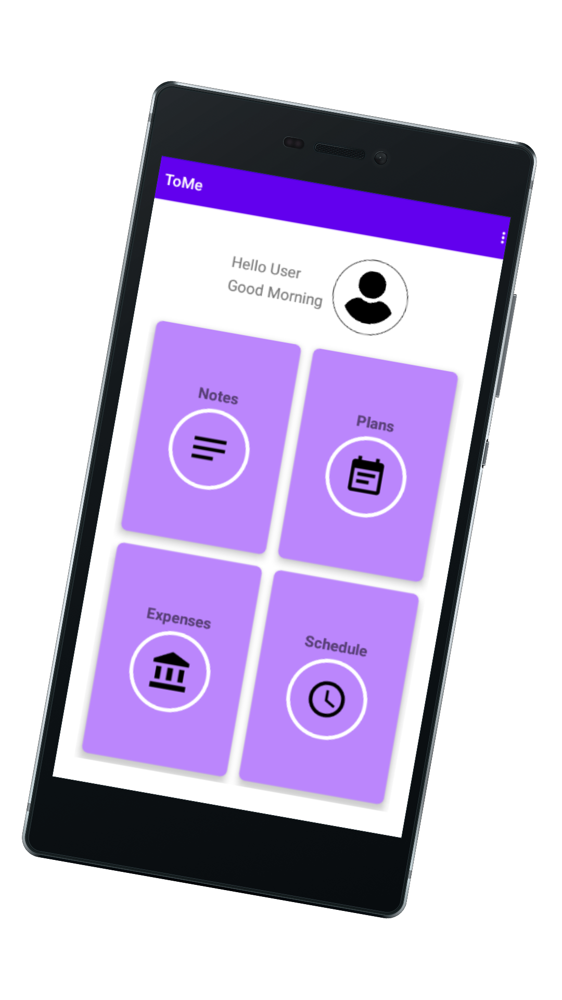
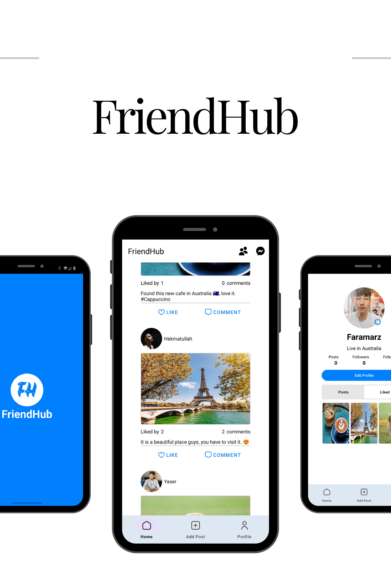
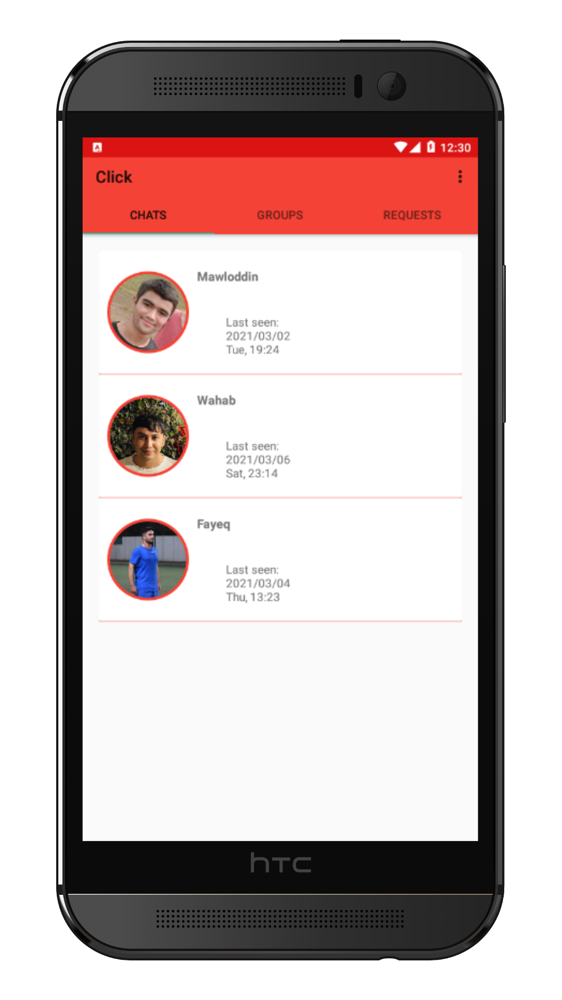

BookFinder is a Compose Multiplatform application enabling users to search for books and mark them as favorites. Designed for Android, iOS, and desktop, it showcases the power of modern multiplatform development with features like cross-platform compatibility and a user-friendly interface. The app employs advanced development practices such as the Model-View-Intent (MVI) design pattern, and tools like Ktor and Koin. It also features KDoc documentation for easy codebase navigation.

TaskMinder is an advanced Android to-do list application designed to streamline task management while showcasing modern Android development practices. Users can create, edit, prioritize, and complete tasks, assign due dates, and set reminders to stay organized and productive. The app offers eight customizable themes (four color palettes in both light and dark modes) and seamless navigation for an intuitive user experience.
Built using Kotlin and Jetpack Compose, TaskMinder employs Firebase services for robust functionality:
- Authentication: Secure user sign-ins with support for anonymous and email/password login, including account linking.
- Cloud Firestore: Real-time task synchronization across devices.
- Crashlytics: Continuous monitoring for app stability and crash reporting.
- Performance Monitoring: Four custom traces measure the efficiency of key operations, such as task saving and account linking.
- Remote Config: Dynamic updates to app settings, including feature toggles for alert visibility.
Adhering to Clean Architecture, the app is designed for scalability, maintainability, and testability. TaskMinder incorporates instrumentation tests, and robust exception handling, ensuring reliability and performance.

OffNews is an Android news application built with an offline-first approach, allowing users to browse and read articles without an internet connection by caching content locally. The app automatically syncs new articles and bookmarks once a connection is restored, ensuring a seamless reading experience both online and offline. It features adaptive layouts for various screen sizes, including phones, tablets, and foldables, and allows users to bookmark articles for later reading. OffNews is developed using Kotlin, Jetpack Compose for the UI, Room for local storage, Retrofit for network requests, and Dagger Hilt for dependency injection, following Clean Architecture principles to ensure scalability and maintainability.

LittleLemonApp is an advanced Android application developed as part of the Coursera "Meta Android Developer Professional Certificate" Capstone project. It provides users with the ability to create accounts, browse and select menu items, add them to a cart, and complete orders with customizable delivery and payment options. The app also includes features for user profile management and theme customization, supporting Light, Dark, and Dynamic themes. Developed using Kotlin and SQLite, with Jetpack Compose for a modern UI, Room for local database management, and Retrofit for network requests, the app follows Clean Architecture principles for scalability and maintainability. Additionally, it incorporates unit tests and instrumentation tests to ensure functionality and UI performance.


ToMe is an Android application designed to enhance personal organization and financial management. It allows users to take and manage notes, set and receive reminders for important events, track financial transactions and budget with precision, and organize their weekly schedules. Built primarily with Java and SQLite for robust data handling.

FriendHub is an Instagram-like social media app that enables users to share photos and videos, follow friends, and interact through likes and comments. Developed using Kotlin, the app leverages Cloud Firestore for backend data management and Firebase Authentication for secure user login. Following the MVVM architecture pattern, FriendHub ensures a clean, scalable codebase. Users can also customize their profiles, send friend requests, and engage with their network seamlessly. The app is built using Android Studio and XML for its UI design, offering a modern, user-friendly experience.

Click is a real-time messaging app that enables users to chat instantly with friends and family, create chat rooms, and view message history. Developed using Java and built on Android Studio, Click utilizes Firebase Realtime Database for seamless message synchronization and Firebase Authentication for secure user login. The app allows users to customize their profiles with pictures and usernames, providing a dynamic and engaging chat experience.